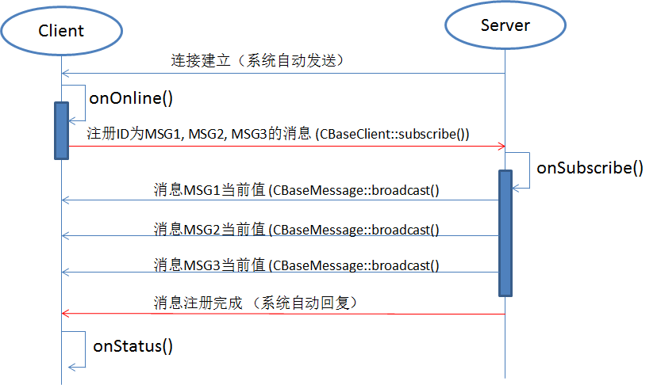

FDBus API¶
基础平台抽象层¶
基础平台抽象层包含了实现FDBus所需要的跟平台相关的API。这些API既可以被FDBus本身使用，也可以用于开发跨平台的应用。
基础平台组件包括
- Thread (CBaseThread.h)
- Mutex and Auto lock (CBaseMutexLock.h)
- Semaphore (CBaseSemaphore.h)
- Pipe (CBasePipe.h)
- Socket (CBaseSocketFactory.h/CSocketImp.h)
- Event Loop (CbaseEventLoop.h/CFdEventLoop.h)
- 其它系统无关API (CBaseSysDep.h)
基础平台组件是实现整个FDBus的基础，目前基础平台组件支持QNX，Windows和Linux。
Thread - CBaseThread¶
- 创建，退出线程以及设置线程属性
- 类CBaseThread API——供外部调用
- CBaseThread()：创建线程实例；此时线程并未启动
- start(bool create_thread)：启动线程并运行线程主循环run()函数。如果create_thread为true则创一个新线程；否则在当前线程执行主循环
- join()：(在另一个线程中）等待线程退出
- isSelf()：判断当前是不是在本线程中运行
- setPriority(int32_t level)：设置线程优先级
- 类CBaseThread虚函数——供子类扩展
- run()：线程主循环
- tearup()：在进程主循环开始前调用，和主循环运行于同一线程中，执行必要的初始化和设置
- teardown()：在进程主循环结束后调用，和主循环运行于同一线程中，执行现场清理工作。
Mutex - CBaseMutexLock¶
- 跨平台的互斥锁
- 类CBaseMutexLock的API
- CBaseMutexLock()：创建互斥锁实例
- lock()：加锁
- unlock()：解锁
Autolock - CAutoLock¶
- Auto lock和Mutex一起使用，主要功能是自动加锁和解锁，尤其是防止忘记解锁，造成死锁。
- 以Mutex为参数创建CAutoLock变量，将自动调用Mutex::lock()。
- 当CAutoLock变量出了作用域后会被析构。在析构过程中会自动调用Mutex::unlock()。
Semaphore - CBaseSemaphore¶
- 跨平台的信号量实现
- 类CBaseSemaphore的API
- CBaseSemaphore(uint32_t initialCount)：创建信号量实例。initialCount指定信号量的初始值。
- post()：发送信号。如果没有线程在等待则信号量加1，否则唤醒等待线程
- wait(int32_t milliseconds)：等待信号。如果信号量为0则休眠等待，否则信号量减1后退出。休眠等待时，如果milliseconds为0则无限等待直到被post()，否则指定超时的毫秒数。
Pipe - CBasePipe¶
- 跨平台的匿名管道
- 类CBasePipe的API – CBasePipe() 创建匿名管道
- open(bool blockOnRead, bool blockOnWrite)：打开管道，创建读写两端的文件句柄。 blockOnWrite为true时，如果管道缓存满则write()操作会导致休眠等待，否则立刻返回； blockOnRead为true时，如果管道里没有数据则read()操作会导致休眠等待，否则立刻返回
- getReadFd()/ getWriteFd()：分别得到管道读端和写端文件句柄
- read(void *buf, uint32_t nBytes)：从读端读取nBytes的数据放在buf里
- write (const void *buf, uint32_t nBytes)：从buf里取出nBytes的数据写入写端
Socket¶
- 跨平台的Socket实现
- Unix平台上支持TCP socket和Unix domain socket；Windows平台只支持TCP socket。
- Socket地址的url定义如下：
- TCP socket：tcp://ip地址:端口号
- Unix domain socket：file://socket文件地址
- Socket工厂类CBaseSocketFactory API
- CClientSocketImp *createClientSocket(const char *url)：创建并返回socket的客户端；根据url决定创建的是TCP socket还是Unix domain socket
- CServerSocketImp *createServerSocket(const char *url)：创建并返回socket的server端；根据url决定创建的是TCP socket还是Unix domain socket
- 客户端socket CClientSocketImp API
- CSocketImp *connect()：连接到Server，并返回连接后的socket
- 服务器端socket CServerSocketImp API
- bool bind()：绑定地址
- CSocketImp *accept()：接收Client的连接，并返回连接的socket
- Socket CSocketImp API
- send(const uint8_t *data, int32_t size)：从data里取出大小为size的数据发给对方
- recv(uint8_t *data, int32_t size)：接收对方的数据，存储在data里，总数不超过size。
Event Loop¶
- 线程的主循环，分为两类
- CThreadEventLoop – 基于Semaphore实现，能够处理Job和Timer
- CFdEventLoop – 基于select()实现，除了Job和Timer，还能运行Watch处理文件读写通知
- EventLoop通常不会直接使用，而是被CBaseWorker封装成worker来使用
高级平台抽象层¶
- 高级平台抽象基于基础平台抽象层，提出基于多线程的进程开发模型，包括如下组件
- Worker (CBaseWorker.h)
- Timer (CBaseTimer.h)
- Watch (CBaseWatch.h/CMethodWatch.h)
- Job (CBaseJob.h/CMethodJob.h)
- Notification (CBaseNotification.h/CMethodNotification.h/CBaseNotificationCenter.h)
- 高级平台抽象层也是FDBus实现的基础
Job - CBaseJob¶
- Job是可以在Worker上运行的对象。Job被提交到Worker的普通或紧急队列，按FIFO方式处理
- 提交给Worker运行的Job必须是用new创建的堆上对象，不能是栈或data区对象。这是因为Worker会负责销毁处理完毕的Job。
- Job的生命周期通过shared_ptr管理：当Job位于队列中时引用计数加1；当Job运行完毕引用计数减1。当引用计数为0时销毁该Job。
- Job的提交分为同步方式和异步方式：同步方式时，Job提交给Worker后，会一直阻塞直到Job运行完毕；异步方式下，Job一旦提交立刻返回，不会阻塞。
- Job提供以下虚函数供扩展
- void run(CBaseWorker *worker, Ptr &ref)：Job的执行体，被Worker调用，在Worker线程中运行。worker为运行该Job的Worker，ref为Job的引用，用于控制Job的生命周期。如果在run()增加该引用则Worker处理完Job，对引用计数减1时由于不为0，不会释放该Job。
- forceRun(bool force)：如果force为true表明该Job不能被丢弃(见后)
Worker - CBaseWorker¶
- Worker继承于CBaseThread，是可以处理Timer，Job和Watch的线程
- Worker的实现主体是Event Loop。启动Worker线程时可以选择使用CThreadEventLoop还是CFdEventLoop。如果没有文件读写要求选择前者，否则选择后者。
- Worker内置两条队列处理Job：普通队列和紧急队列。只有处理完紧急队列后才处理普通队列的Job请求。
- CBaseWorker的API
- CBaseWorker(uint32_t normal_queue_size = 0, uint32_t urgent_queue_size = 0)：创建Worker实例。 normal_queue_size设置普通队列长度上限； urgent_queue_size设置紧急队列长度上限。如果队列中待处理的Job个数超出上限则无法发送。”0”表示无限制。
- start(uint32_t flag = FDB_WORKER_DEFAULT)：开始运行Worker的Event Loop。Flag是如下位域的组合
- FDB_WORKER_EXE_IN_PLACE：如果不设置则表示创建一个线程运行Event Loop；否则就在当前上下文中运行Event Loop；
- FDB_WORKER_ENABLE_FD_LOOP：如果不设置则线程不能等待文件读写通知，即不支持Watch，只能运行Timer和Job；否则支持Watch。
- exit(int32_t exit_code = 1)：退出Worker的工作线程。该函数调用后，如果Worker正在处理Job则无法立刻退出，要等到Job处理完毕才能退出。exit_code必须非0，表明退出的原因，通常可以在teardown()里使用。
- sendAsync(CBaseJob *job, bool urgent = false)：以异步方式提交Job给Worker。Job必须是用new的方式动态创建，且使用者不需要释放，Worker会在处理完毕后释放掉。Urgent选择发送到普通队列还是紧急队列。
- sendAsyncEndeavor(CBaseJob *job, bool urgent = false)：同上，区别是，如果该函数被worker线程自身调用时，Job将不被送入任何队列，而是直接运行该Job。这样做效率较高，但会打乱Job处理的FIFO顺序。
- sendSync(CBaseJob *job, long milliseconds = 0, bool urgent = false)：以同步方式提交Job给Worker。Job必须是用new的方式动态创建，且使用者不需要释放，Worker会在处理完毕后释放掉。 milliseconds设置最长阻塞时间（默认0为无限等待）。urgent选择发送到普通队列还是紧急队列。要注意，该函数不能被worker线程自身调用，否则会死锁。
- sendSyncEndeavor(CBaseJob *job, long milliseconds = 0, bool urgent = false)：同上，区别是，如果该函数被worker线程自身调用时，job将不被送入任何队列，而是直接运行该Job 。这样做效率较高，但会打乱Job处理的FIFO顺序。
- sendSync(CBaseJob::Ptr &job, long milliseconds = 0, bool urgent = false)：同上sendSync()，区别是Job传入的是引用而非指针，使用者可能还持有该Job，因此该函数调用完毕Worker不会释放Job的内存，只是减少引用计数。 Urgent选择发送到普通队列还是紧急队列。
- sendSyncEndeavor(CBaseJob::Ptr &job, long milliseconds = 0, bool urgent = false)：同上，区别是，如果该函数被worker线程自身调用时，job将不被送入任何队列，而是直接运行该Job 。这样做效率较高，但会打乱Job处理的FIFO顺序。
- flush(long milliseconds = 0, bool urgent = false)：向Worker同步提交一个CBaseJob的实例。一旦该函数返回，可以确保所有之前待处理的Job已经处理完毕。由于是同步提交，该函数不能被Worker线程自身调用。
- void discardQueuedJobs(bool urgent = false)：丢弃当前排在队列中待处理的Job。对于正在运行的Job是无法终止的，只能待其处理完毕，丢弃随后的Job。该函数执行完后再提交的Job将不会被丢弃，将会正常处理。如果Job很重要，调用CBaseJob::forecRun()可以防止其被丢弃，而是正常处理。
Timer - CBaseLoopTimer¶
- Timer提供毫秒级精度，无抖动保障的定时器。优点是资源占用少，和Worker融合在一起，使用方便。
- 由于Timer和Job，Watch可以在同一Worker线程中运行，一旦Job或Watch执行时间过长，超出Timer间隔，会导致Timer触发时间的抖动。
- Timer利用系统调用的超时机制实现，以select()为例，如果Worker上运行了3个Timer，分别将在15毫秒，40毫秒，80毫秒后到期，则select()的超时设置如下
- CBaseLoopTimer的API
- CBaseLoopTimer(int32_t interval, bool repeat = false)：创建Timer实例。Interval代表Timer的时间间隔；repeat表示创建的是cyclic Timer还是one-shot Timer：一旦使能后，cyclic Timer会以interval毫秒为周期反复执行；one-shot Timer在interval毫秒超时后不再执行。
- attach(CBaseWorker *worker, bool enb = true)：指定运行Timer的Worker。只有指定了Worker后Timer才能开始工作。超时后，Timer的run()函数将在该Worker上执行。 如果enb为true，Timer立刻开始在指定的Worker上执行；否则可以将来用enable()启动。
- enable(int32_t interval = -1)：启动Timer。启动后的Timer将在指定的Worker上工作。如果调用该函数时Timer正在运行，那么超时时间将被重置为interval毫秒之后。参数interval提供修改超时时间的机会。如果为-1则**不改变超时时间**。该函数不改变cyclic/one-shot模式。
- enableRepeat(int32_t interval = -1, int32_t init_value = -1)：同enable()，但将Timer的模式设为**cyclic**，同时除了能用interval改变周期，还可以将第一次超时的时间设置为init_value毫秒。如果init_value为-1则该时间等于interval。
- enableOneShot(int32_t interval = -1)：同enable()，但将Timer的模式设置为one-shot。 disable()：停止运行Timer。
- CBaseLoopTimer的虚函数
- void run()：Timer的执行函数；当Timer超时时在Worker的线程中被调用。

Watch - CBaseFdWatch¶
- Watch基于select()，将多个文件的输入输出的合并在一起，统一等待，串行处理。
- 每个Watch对应一个文件描述符(File Descriptor)。使用者负责打开文件并交给Watch。
- Watch只能在用FDB_WORKER_ENABLE_FD_LOOP标志启动的Worker上执行。
- 和timer一样，watch必须attach在特定线程上才能工作。
- CBaseFdWatch的API
- CBaseFdWatch(int fd, int32_t flags)：创建Watch的实例。fd为一个打开的文件描述符；flags表明需要等待的文件事件，可是以下位域的组合：
- POLLIN：当文件有数据可供读取时调用onInput()成员函数
- POLLOUT：当文件可以输出数据时调用onOutput()成员函数
- POLLHUP：当对方关闭文件时调用onHup()成员函数
- POLLERR：当文件操作出现错误时调用onError()成员函数
- attach(CBaseWorker *worker, bool enb = true)：指定运行Watch的Worker。只有指定了Worker后Watch才能开始工作。上述onXxx()都是在Worker线程上下文运行。如果enb为true，Watch立刻开始在该Worker上运行；否则可以将来用enable()启动。
- enable()/disable()：使能/停止Watch
- CBaseFdWatch(int fd, int32_t flags)：创建Watch的实例。fd为一个打开的文件描述符；flags表明需要等待的文件事件，可是以下位域的组合：
Notification¶
- Notification是一个轻量级事件订阅-发布机制，用于同一进程内的线程之间一对多的消息通知。相比之下，Job只能点对点通信。
- CBaseNotification定义消息通知的订阅方，API包括
- CBaseNotification(FdbEventCode_t event = FDB_INVALID_ID, CBaseWorker *worker = 0) ：创建Notification的实例。event设置需要订阅的事件ID；worker选择接收通知的Worker：如果为空则执行函数run()在CNotificationCenter::notify()执行时被调用；否则将转发到Worker的线程上执行。
- CBaseNotification的虚函数
- void run(T &data)：Notification的执行函数。data是需要通知的数据，为模板类型。
- CNotificationCenter定义通知的发布方，API包括
- subscribe(typename CBaseNotification
::Ptr ¬ification)：订阅某一事件的通知；当事件发生时运行通知的run()函数。 - unsubscribe(typename CBaseNotification
::Ptr ¬ification)：取消订阅 - void notify(FdbEventCode_t event, T &data)：当事件发生时，通知所有订阅了该事件的Notification。event为发生的事件；data为事件跟随的数据。如果Notification指定了Worker，该Notification的run()将被抛到Worker线程上运行，否则在调用notify()时直接运行。
- subscribe(typename CBaseNotification
Inter-Process Communication(IPC)¶
基本概念¶
-
server vs. socket
- 一个Server包含多个socket，即一个server可以bind到(侦听)多个地址
-
socket vs. session
- 每个socket包含多个session，因为server的**accept**()会返回多个文件描述符(fd)
-
session
- 一个session代表一个client-server的连接; 消息都是在session中传递
-
client vs. socket
- 一个client包含多个socket，即client可以connect到多个地址（server必须已经在侦听这些地址）
- 实际应用中，每个client只会连接一个地址
- socket vs. session
- 每个socket包含一个session，因为client只有一个fd
- client和server统称为endpoint，用FdbEndpointId_t表示
- session用FdbSessionId_t表示
- socket用FdbSocketId_t表示
IPC¶
- IPC提供进程间通信机制。根据通信双方进程的部署位置分为本地进程间通信和节点间进程通信。
不同于Job的点对点通信，IPC采用Client-Server模式，具备如下特性
- Client是连接的发起者；Server是连接的接受者
- Client是命令的发起者和数据的请求者；Server是命令的执行者和数据的产生者
- 一个Client连接一个Server；一个Server可以连接多个Client Client没有地址，但可以连接多个Server地址；Server拥有多个地址，每个地址可以连接多个Client
- Server也可以广播方式主动向多个Client推送消息；Client可以向Server订阅特定的消息
- IPC底层实现基于Socket，目前使用TCP socket和Unix domain socket。
消息结构¶
- FDBus消息由ID + 数据组成
- ID是强制项，为32位整型，每个Message必须由ID标识。对于一个Server，ID必须唯一，不能重复。更准确地说，所有request-reply消息的ID必须唯一；所有广播推送的消息必须唯一；二者之间可以有重复
- 数据部分为可选项，支持两种格式：
- 原始数据 (void *)
- Protocol Buffer格式 (CFdbBasePayload)
消息数据¶
- **原始数据**没有格式，只是将一片内存数据从一个进程发送到另一个进程。通常用于文件，升级包，音频数据的传输。
- **Protocol Buffer**是谷歌开源的，语言独立，平台独立的数据交换格式，适用于网络传输，数据存储等多领域。
- Protocol Buffer支持大部分C++基本类型，由基本类型组合成的复合类型，复合类型的嵌套，以及基本类型和复合类型组成的，长度可变的数组（vector）类型。Protocol Buffer的数据成员可以是必选或可选，使得消息定义更加灵活。
- Protocol Buffer消息用特定的IDL格式定义，自动生成包括C++在内的多种语言的源代码，避免繁琐的组包和解包。开发者只要了解C++的基本类型，类和容器操作，不必关心具体的包格式。
通信Endpoint：Client与Server¶
- Client与Server是FDBus通信的参与者，统称Endpoint。Client是服务/功能的发起者和使用者；Server是功能/服务的提供者。
- Client继承自CBaseClient，通过connect()方法连接到Server绑定的地址。
- Server继承自CBaseServer，通过bind()方法绑定自己的地址。
- connect()/bind()的地址为的url格式，包括TCP，Unix domain和名字地址，通常使用需要NameServer解析的名字地址（见后）。
CFdbBaseObject：更基础的Endpoint¶
- 无论是Client还是Server，都是以CFdbBaseObject为基类，所有方法和回调都在该基类里
- CFdbBaseObject可以看成在Client和Server之间创建的通道，每个通道的ID就是CFdbBaseObject的ID。CBaseClient和CBaseServer使用通道0来通信；1~65535通道用于CFdbBaseObject之间的通信。

CFdbBaseObject：Example¶
- 通过继承CBaseClient和CBaseServer，创建媒体服务MediaService的Client端和Server端，使用通道0通信；
- 通过继承CFdbBaseObject，在MediaService的Client端和Server端创建多个媒体播放器实例的Client端和Server端，使用通道1，2…通信
- 每个client object和server object支持request-response, subscribe-publish

Client/Server回调(虚)函数¶
- Client/Server连接建立后，有事件发生时，FDBus调用CBaseClient/CBaseServer相关虚函数通知Client/Server做相应处理。这些事件包括
- Client连接上Server或与Server断开时
- Server收到Client的连接请求时
- Server收到Client的命令或数据请求时
- Server收到Client消息订阅请求时
- Client向Server发送异步请求后，收到Server回复时
- 在实现具体的Client/Server时要**重载基类的虚函数**，捕获这些事件，处理相关业务。
Context – FDBus的工作线程¶
- 每个挂在FDBus上的进程必须启动一个Worker处理IPC数据的读写和消息交互管理，该Worker叫做FDBus的Context。
- 无论是Client还是Server，对socket的读写都委托Context线程来执行。故所有对FDBus的访问首先必须以Job的形式提交给Context；Context收到的消息也会以Job形式转给工作线程处理。
- Context是个普通的Worker，可以运行Watch，Job，Timer，甚至Client和Server。对于简单的进程，只要一个Context线程就可以实现所有功能。
Client/Server的工作线程¶
- 除Context外，根据需要还可以启动其它Worker线程执行Client/Server的回调函数。执行回调函数的线程叫做Client/Server的工作线程。
- 每个挂在FDBus上的进程可以启动数目不受限制的Client和Server。这些Client/Server可以有自己专属的工作线程，也可以共享同一工作线程。
- 在实例化Client/Server时，可以指定一个Worker作为其工作线程。如果几个Endpoint指定同一线程，那么它们的业务将共享该线程；如果不指定工作线程，那么Context就是默认的工作线程。一个Endpoint不能指定多个工作线程。
FDBus进程部署图¶

FDBus开发框架¶

Client-Server请求¶
- 从Client向Server发送的请求包括以下类型
- 带超时的异步请求：向Server发送请求后，不会等待Server的回复。随后的回复通过回调函数onReply()获得。如果在指定的时间没有回复会取消本次交互
- 带超时的同步请求：向Server发送请求后，会等待直到获得Server的回复。如果在指定的时间没有回复会取消本次交互
- 无回复的请求：向Server发送请求后，无需Server的回复，既不等待，也不触发回调函数。
- 无论何种请求，Server都通过onInvoke()回调函数来接收并处理。
Client-Server连接¶

Client-Server方法调用¶

Server的消息推送¶
- Server可以主动向Client推送消息，而无需Client请求。但是需要注册后，Client才能收到推送的消息。
- 消息通过ID注册。除了ID，注册时还可以附加一个字符串作为“filter”。Server在推送消息时，只有ID和filter都匹配时，Client才能收到消息。
- 应用场景：WiFi Server每扫描到一个网络就通过消息ID MSG_ID_WIFI_FOUND 广播出来，并以网络的SSID作为“filter”。Client可以注册该ID；如果只对特定SSID感兴趣,注册时还可以附加SSID作为“filter”。只有具有该SSID的网络被搜索到时Client才会收到推送消息。
- 消息以一对多的形式推送，所有注册过消息的Client都能收到。但接收消息的先后顺序没有保证。
推送（广播）消息的注册¶
- 当Client注册消息时，Server能够通过onSubscribe()回调函数获知。
- 该回调函数的目的是在Client注册某个属性时，Server有机会将属性的初始值发送给Client端。通常只有属性发生变化时，Server才会通过消息将变化推送给Client端。有了该回调函数，当Client注册某个属性时，即使属性没有变化也能获得属性的当前值，且无需发送额外的请求。
注册广播消息¶

寻址和组网¶
Server地址¶
- Server地址代表Server在网络中的位置，通过该地址Client可以定位并和Server建立通信。
- Server可以同时绑定多个地址，每个地址可以接受Client的连接。一旦连接上，每个地址都提供同样的服务，所以Client可以选择任意一个地址连接。
- Server地址是字符串形式的URL，格式如下：
- TCP socket：tcp://ip地址:端口号
- Unix domain socket：file://socket文件地址

Server命名与名字解析¶
- Server地址不直观，会随组网方式变化，使用不方便。
- FDBus采用类似DNS方式实现Server寻址：每个Server可以拥有自己的名字，并运行一个叫NameServer的服务，负责为Server分配地址，管理Server名字-地址映射，解析Server名字，发布Server地址
- 为支持Server名字寻址，在两种URL之外增加一种格式，作为名字地址，如下所示
- svc://server名字
- 名字地址是虚拟地址。无论Server位于何处，只要它的名字地址不变，Client都可以通过该地址与之建立联系。
- 如果Server绑定名字地址，NameServer会为其分配实际地址(tcp://或file://开头的地址)，并将名字和地址注册到映射表里
- 如果Client连接名字地址，NameServer会根据名字查找到Server的实际地址，选择一个最合适的地址发布给Client。Client通过该地址与Server建立点对点的直连。
地址分配表¶
- NameServer用如下规则分配Server地址：
| TCP Socket | Unix Domain Socket | |
|---|---|---|
| HostServer | Port 60000 | /tmp/fdb-hs |
| NameServer | Port 60001 | /tmp/fdb-ns |
| User Server | Port 60002 – Port 65535 | /tmp/fdb-ipc0, /tmp/fdb-ipc1 … |
Server名字解析¶

HostServer与节点名字¶
- NameServer只能解析本地Server名字，但Server可能位于网络中任意节点上。为了将整个网络连接在一起，需要启动HostServer
- 网络里只有一个HostServer，可以运行于任意一个节点上，通常是连接性能较好的节点
- 所有节点的NameServer都连接到HostServer上，将本节点的名字，IP地址发给HostServer。HostServer收集各节点的节点名和IP地址并注册到表里
- 同时NameServer从HostServer处获得表里其它节点上NameServer信息，并逐一与它们建立连接。这样节点里NameServer和唯一的HostServer构成星形连接，而各NameServer之间两两相连。

Server名字的唯一性¶
- 在节点内部，Server名字必须唯一，否则无法在NameServer里注册
- 在不同节点上，Server可以重名。但这样会造成困惑：假如Client已经连接到节点A上的MediaServer，但节点B上又启动了MediaServer。此时该Client又会收到MediaServer上线的通知。是连还是不连？
- Client提供一个回调函数connectionEnabled()，允许Client在服务重名时选择连接哪个节点的服务。
超时与重连¶
- 超时与重连确保网络不稳或异常时FDBus各服务始终保持连接；同时确保以任何顺序启动Client/Server，名字解析都能正常工作，它们之间都能连接上
- HostServer每秒钟向各NameServer广播心跳消息。如果5秒内没有收到某个NameServer的确认则认为该NameServer所在的节点掉线，将清除该节点的注册信息
- 每个NameServer期待每秒钟都能收到HostServer的心跳包。如果5秒内没有收到则认为HostServer掉线，将启动500毫秒间隔的定时器尝试与HostServer重连
- 当NameServer启动时没有获得IP地址，将启动300毫秒的定时器尝试反复获取IP地址
- 当Server/Client希望NameServer解析名字时无法与NameServer取得联系，将启动300毫秒的定时器尝试反复连接NameServer
Commands¶
- host_server: start host server
- name_server: start name server
- Usage: name_server [ -n host_name] [-u host_url]
- name_server -n “head unit”
- Start name server and connect to local host server
- name_server –n “ICU” –u tcp://192.168.1.100:60000
- Start name server and connect to remote host server
- name_server -n “head unit”
- lssvc:list all services
- lssvc
- List all services in FDBus
- lssvc –f
- List all services and keep monitoring
- lssvc
- Usage: name_server [ -n host_name] [-u host_url]
Logging¶
Log系统¶
- Log系统可以抓取FDBus上所有消息，包括本主机和所有联网的主机
- Log系统同时还支持调试Log输出
- Log系统也基于FDBus实现：所有Client/Server都内置LogClient，同时启动LogServer。LogClient把FDBus消息和调试消息发给LogServer。
- LogServer可以把收集到的Log打印在终端上。也可以启动LogViewer连接到LogServer上来查看Log

调试Log输出¶
- 优先级（从低到高）：
- Debug
- Info
- Warning
- Error
- Fatal
- 输出时LogServer可以设置不同的优先级等级；级别低的不输出
调试Log输出API – 带tag版本¶
- FDB_TLOG_D(tag, format, param1, param2…)：输出调试级别的Log。Tag通常代表模块名；Format, param1, param2…格式与printf()相同。
- 对于不同等级分别提供以下方法
- FDB_TLOG_I – 输出info等级的log
- FDB_TLOG_W – 输出warning等级的log
- FDB_TLOG_E – 输出error等级的log
- FDB_TLOG_F – 输出fatal等级的log
调试Log输出API – 无tag版本¶
-
在文件里使用如下方式定义无tag版本：
1 2
#define _FDB_LOG_TAG_ “my_tag" #include <common_base/fdb_log_trace.h>
-
以后就可以使用FDB_LOG_D(format, param1, param2…)：输出调试级别的Log。Format, param1, param2…格式与printf()相同。Tag使用的就是_FDB_LOG_TAG_。
-
对于不同等级分别提供以下方法
- FDB_LOG_I – 输出info等级的log
- FDB_LOG_W – 输出warning等级的log
- FDB_LOG_E – 输出error等级的log
- FDB_LOG_F – 输出fatal等级的log
LogServer¶
- 系统里只能存在一个LogServer，启动方式为：logsvc [options]
- FDBus Log选项:
- -q 禁止输出FDBus的request类型消息
- -p 禁止输出FDBus的reply类型消息
- -b 禁止输出FDBus的broadcast类型消息
- -s 禁止输出FDBus的subscribe类型消息
- -f 禁止输出所有FDBus消息
- -o 禁止输出到终端上（可以通过LogView查看）
- -c 如果消息是raw data，控制raw data最大输出长度
- -e ep1,ep2… 选择只输出指定endpoint的FDBus消息
- -m host1,host2… 选择只输出指定主机的FDBus消息
- 调试 Log选项:
- -l level 设置调试Log的输出等级，取值为
0-verbose 1-debug 2-info 3-warning 4-error 5-fatal - -d 禁止输出调试Log
- -t tag1,tag2… 仅输出指定tag的调试log
- -M [host1,host2…] 选择只输出指定主机的调试Log
- -l level 设置调试Log的输出等级，取值为
- 输出含义
1 2 3 4 5 6 7 8 9 10 11 12 13 14 15 16 17 18 19 20 21 | ==== fdbus monitor log format: ====
[F]
[pid of message sender]
[host name of message sender]
[message sender name -> message receiver name]
[service name of fdbus]
[object id]
[message type]
[message code]
[serial number]
[size of payload]
[time stamp]
message details
==== debug trace log format: ====
[D]
[level: V-verbose; D-Debug; I-Information; W-Warning; E-Error; F-Fatal; S-Silence]
[tag]
[pid of log generator]
[host name of log generator]
[time stamp]
log information
|
LogViewer¶
- 系统里可以存在多个输出内容完全相同的LogViewer，启动方式为：logclt [options]
- logclt –n [options] 配置LogServer。配置选项options和LogServer的启动选项相同
- logclt 启动LogViewer并把输出打印在stdout（终端上）